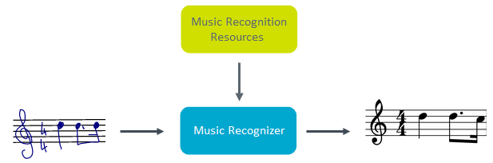

MyScript Music recognition engine analyzes the spatial relationship between the various parts of the music document and the recognizer sends you a result in MusicXML and ScoreTREE strings.

MyScript Music requires two resource files:
Resources are to be attached to the recognizer, in order to tell it how to perform the segmentation of all the input ink parts.
While digital ink is captured in real time, it is simultaneously recognized in the background. The Music recognizer will first analyze the spatial relationship between parts of the score. It will then use a symbol classifier that calculates the probabilities for all the elements in the suggested segmentation. Finally it will output a result.
See the Reference guide for information on the mandatory and optional parameters needed for Music recognition.
The below example shows a text recognition request where the following are to be specified:
A clef is required for each Music recognition request.
<!DOCTYPE html>
<html>
<head>
<meta> charset="utf-8"</meta>
<title>Music - Getting started</title>
</head>
<body>
<h1>Music - Getting started</h1>
<canvas id="canvas" width="400" height="300" style="background-color: lightyellow; border: 1px solid darkgoldenrod;"></canvas>
<br/>
<pre id="result"></pre>
</body>
<!-- CryptoJS imports -->
<script type="text/javascript" src="lib/core-min.js"></script>
<script type="text/javascript" src="lib/x64-core-min.js"></script>
<script type="text/javascript" src="lib/sha512-min.js"></script>
<script type="text/javascript" src="lib/hmac-min.js"></script>
<!-- Q imports -->
<script type="text/javascript" src="lib/q.js"></script>
<!-- HandJS imports -->
<script type="text/javascript" src="lib/hand.minified-1.3.8.js"></script>
<!-- MyScriptJS imports -->
<script type="text/javascript" src="../myscript.min.js"></script>
<script>
(function() {
var result = document.getElementById("result");
var canvas = document.getElementById("canvas");
var context = canvas.getContext("2d");
var pointerId;
var instanceId;
/*
* Handle MyScript Cloud authentication keys
*/
var applicationKey = prompt("Please enter your application key", "xxxxxxxx-xxxx-xxxx-xxxx-xxxxxxxxxxxx");
var hmacKey = prompt("Please enter your HMAC key", "xxxxxxxx-xxxx-xxxx-xxxx-xxxxxxxxxxxx");
/*
* Declare an instance of MyScriptJS InkManager in order to capture digital ink
*/
var inkManager = new MyScript.InkManager();
/*
* Declare an instance of MyScriptJS MusicRenderer in order to enable ink rendering
*/
var musicRenderer = new MyScript.MusicRenderer();
/*
* Declare an instance of MyScriptJS MusicRecognizer
*/
var musicRecognizer = new MyScript.MusicRecognizer();
//N.B.: Staff and clef are required in order to enable music recognition
/*
* Init Music Staff mandatory for recognition engine.
*/
var staff = new MyScript.MusicStaff(); // By default has 5 lines with a gap of 20px
staff.setTop(100); // 100px from the top
/*
* Set Result Types (i.e.: "MUSICXML")
*/
musicRecognizer.getParameters().setResultTypes(['MUSICXML']);
/*
* Set time division (i.e.: 480)
*/
musicRecognizer.getParameters().setDivisions(480);
/*
* Set reference staff.
*/
musicRecognizer.getParameters().setStaff(staff);
/*
* Define staff bounding box
*/
var boundingBox = new MyScript.Rectangle();
boundingBox.setX(5);
boundingBox.setY(73);
boundingBox.setHeight((staff.getCount() + 2) * staff.getGap());
/*
* Init Music clef mandatory for recognition engine.
*/
var clefInput = new MyScript.MusicClefInputComponent(); // By default it's a G clef with a 0 octave
clefInput.getValue().setYAnchor(staff.getTop() + (staff.getGap() * (staff.getCount() - 2)));
clefInput.setBoundingBox(boundingBox);
var components = [clefInput];
/*
* Render Staff and inks
*/
musicRenderer.drawStaff(staff, context);
musicRenderer.drawComponents(components, context);
function doRecognition () {
if (inkManager.isEmpty()) {
result.innerHTML = '';
} else {
musicRecognizer.doSimpleRecognition(applicationKey, instanceId, components.concat(inkManager.getStrokes()), hmacKey).then(
function (data) {
if (!instanceId) {
instanceId = data.getInstanceId();
} else if (instanceId !== data.getInstanceId()) {
return;
}
var results = data.getMusicDocument().getResultElements();
for (var i in results) {
if (results[i] instanceof MyScript.MusicXMLResultElement) {
result.innerHTML = JSON.stringify(results[i].getValue());
}
}
}
);
}
}
/*
* On pointer down: Start ink rendering and ink capture.
*/
canvas.addEventListener('pointerdown', function (event) {
if (!pointerId) {
pointerId = event.pointerId;
event.preventDefault();
// Start ink rendering
musicRenderer.drawStart(event.offsetX, event.offsetY);
// Start ink capture
inkManager.startInkCapture(event.offsetX, event.offsetY);
}
}, false);
/*
* On pointer move: Continue ink rendering and ink capture.
*/
canvas.addEventListener('pointermove', function (event) {
if (pointerId === event.pointerId) {
event.preventDefault();
// Continue ink rendering
musicRenderer.drawContinue(event.offsetX, event.offsetY, context);
// Continue ink capture
inkManager.continueInkCapture(event.offsetX, event.offsetY);
}
}, false);
/*
* On pointer up: Stop ink rendering and ink capture and send recognition request.
*/
canvas.addEventListener('pointerup', function (event) {
if (pointerId === event.pointerId) {
event.preventDefault();
// Stop ink rendering
musicRenderer.drawEnd(event.offsetX, event.offsetY, context);
// Stop ink capture
inkManager.endInkCapture();
pointerId = undefined;
// Send recognition request
doRecognition();
}
}, false);
/*
* On pointer leave: Continue ink rendering and ink capture.
*/
canvas.addEventListener('pointerleave', function (event) {
if (pointerId === event.pointerId) {
event.preventDefault();
// Stop ink rendering
musicRenderer.drawEnd(event.offsetX, event.offsetY, context);
// Stop ink capture
inkManager.endInkCapture();
pointerId = undefined;
// Send recognition request
doRecognition();
}
}, false);
})();
</script>